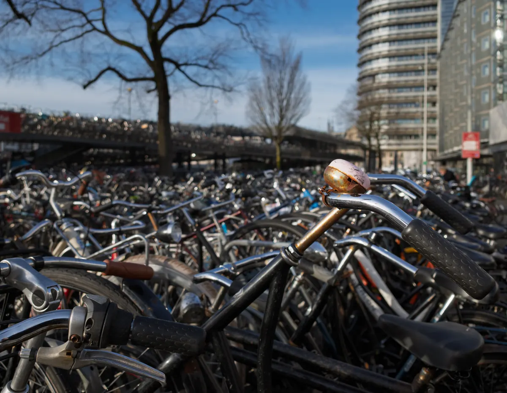

Pan de masa madre en la Carrera 33
Horneado de noche en Cabecera, listo a las seis de la mañana.
Del trigo de Boyacá

Masa madre de doce años. 
Centeno, los jueves. 
Enfriado en rejilla. 
Harina molida en piedra. 
La hogaza de la casa.
a la mesa de Cabecera
Los panes de la semana
1 / 4

Hogaza de trigo
Todos los días.

Centeno
Los jueves.

Integral
Martes y sábados.

Semillas
Los domingos.
Carrera 33, Cabecera
- Horario
- Lunes a sábado, 6:00 a 13:00
- Teléfono
- 607 000 0000
- Encargos
- pan@panaderia.example